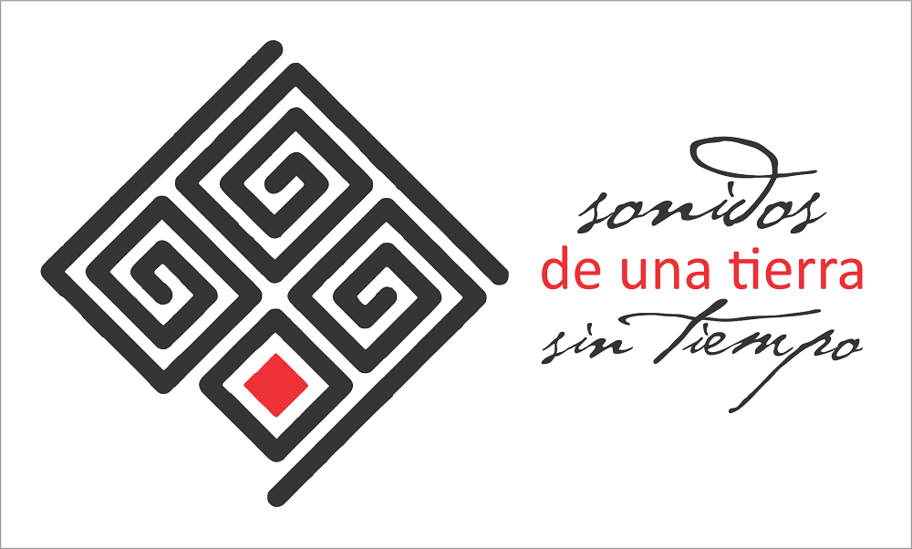
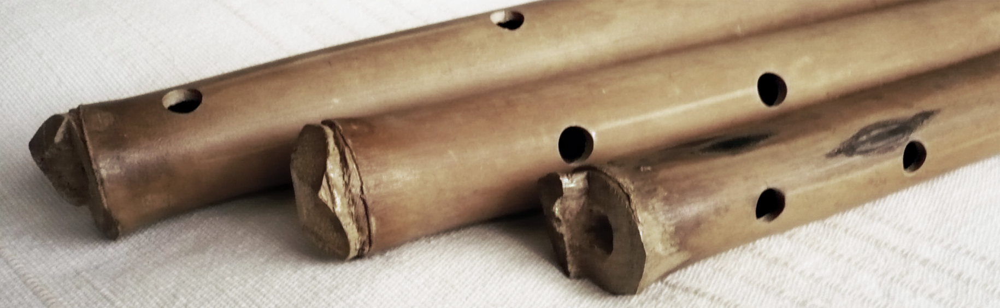
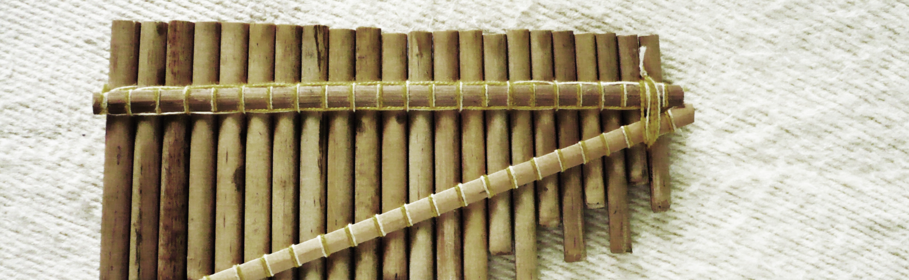
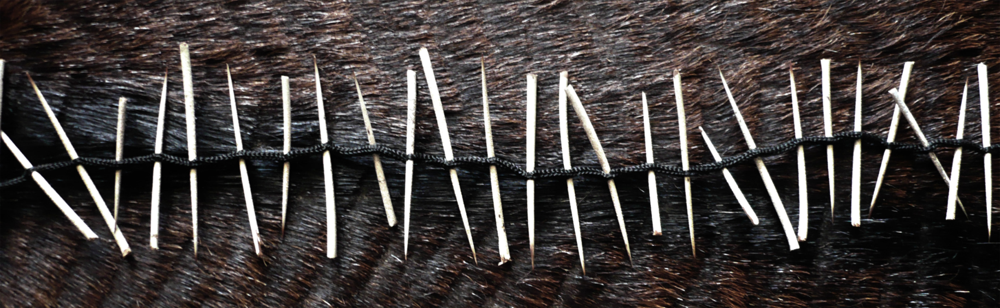
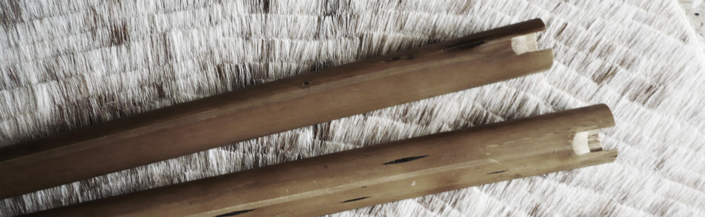

Actividades
Inicio > Actividades
Las actividades desarrolladas en el marco del proyecto Instrumentarium tienen un carácter divulgativo y docente, y se agrupan bajo el título Sonidos de una tierra sin tiempo.

Como conjunto de actividades educativas y divulgativas, Sonidos de una tierra sin tiempo plantea la recuperación y organización de conocimiento y memoria musical latinoamericana a partir de documentos de bibliotecas, archivos, museos y comunidades orales, y la creación de espacios y eventos en donde se transmita toda esa información a través de la interpretación de una selección de instrumentos musicales, tradicionales o no, y la presentación de textos y otros materiales.
Sonidos de una tierra sin tiempo incluye conciertos didácticos y exposiciones, conferencias, cursos, talleres y seminarios, tanto sobre los instrumentos musicales, la cultura musical que codifican y el entorno que los rodea, como sobre tradición oral y sonora y su gestión. Todas las actividades van dirigidas a distintos tipos de audiencia, con distintas duraciones y estructuras.

Conciertos didácticos y exposiciones
Los conciertos didácticos y las exposiciones abarcan un amplio espectro de temáticas relacionadas con instrumentos musicales tradicionales de todo el mundo: desde la presentación de familias de instrumentos (aerófonos, cordófonos, membranófonos) hasta la descripción por regiones geográficas / países, grupos étnicos, géneros musicales o periodos históricos. Todos los conciertos incluyen exposición y demostración de instrumentos, fragmentos de tradición oral y contenidos basados en sólidas fuentes académicas e investigaciones del autor.
Ejemplos (basados en América del Sur): Instrumentos indígenas de las tierras altas / bajas sudamericanas | Instrumentos mestizos / criollos de Sudamérica | Instrumentos de los Andes | Instrumentos de viento / cuerda / percusión tradicionales de Sudamérica | Flautas de Pan / de bisel / de pico sudamericanas | Flautas traversas / globulares sudamericanas | Trompetas naturales sudamericanas | Clarinetes sudamericanos | Arcos musicales / cordófonos sudamericanos | Instrumentos de percusión sudamericanos | Los sonidos del Gran Chaco / de la Patagonia / de la Orinoquia | Instrumentos y tradiciones musicales de los Quechua / Aymara / Mapuche.

Conferencias
Las conferencias son eventos teóricos similares en temáticas a los conciertos didácticos, aunque sustituyendo la exposición y demostración de instrumentos por el empleo de soportes audiovisuales y multimedia pertinentes.
Ejemplos (basados en América del Sur): Instrumentos musicales (charangos y sirenas, las bandas de sikuris...) | Ritmos y estilos musicales (chirimía colombiana, música gaúcha...) | Músicas tradicionales (de los Guaraní, de la Sierra Nevada...) | Tradición oral y cultura sonora (en la Patagonia, en los Andes...) | Danzas e indumentaria (en la sierra central peruana, en el litoral argentino...) | Fiestas, ceremonias y festivales (en las tierras bajas, en el Titicaca...) | Costumbres, mitos y leyendas (afro-bolivianos, en el bajo Amazonas...).

Cursos y talleres
Los cursos y talleres son actividades eminentemente prácticas, que abarcan la construcción (solo en algunos casos) e interpretación de instrumentos musicales tradicionales de todo el mundo. Se centran especialmente en aerófonos e idiófonos, y en agrupaciones musicales comunitarias, aunque abordan también muchos otros estilos e instrumentos.
Ejemplos (basados en América del Sur): Construcción de instrumentos sencillos (sikus, quenas, arcos) | Interpretación de instrumentos solistas (quena, pinkillo, zampoña, rondador, tarka, mohoseño, bombo legüero, charango...) | Interpretación en agrupaciones tradicionales (sikuris, tropas de flautas verticales, cuarteto folklórico argentino, flautas colombianas...) | Interpretación de ritmos y estilos (por regiones, países, grupos étnicos, festividades...).

Seminarios
Los seminarios son similares a los cursos y talleres, pero de contenidos mayoritariamente teóricos y especializados.
Ejemplos: Instrumentos musicales (por familia, por región, por pueblo) | Ritmos y estilos musicales (por país, por región, por pueblo) | Músicas tradicionales (por país, por región, por pueblo) | Tradición oral y cultura sonora | Danzas (coreografías, estilos) e indumentaria (por región) | Fiestas, ceremonias y festivales (por periodo, por pueblo) | Costumbres, mitos y leyendas (por región, por pueblo) | Recolección de tradición oral (metodología y práctica) | Gestión de tradición oral y sonora (metodología y práctica) | Metodología de la investigación musicológica | Organología de campo (metodología y práctica).
Contacto
Las organizaciones e instituciones interesadas en Sonidos de una tierra sin tiempo pueden entrar en contacto para obtener mayor información, consultar la posibilidad de realizar actividades no incluidas aquí, y fijar cronogramas y condiciones.